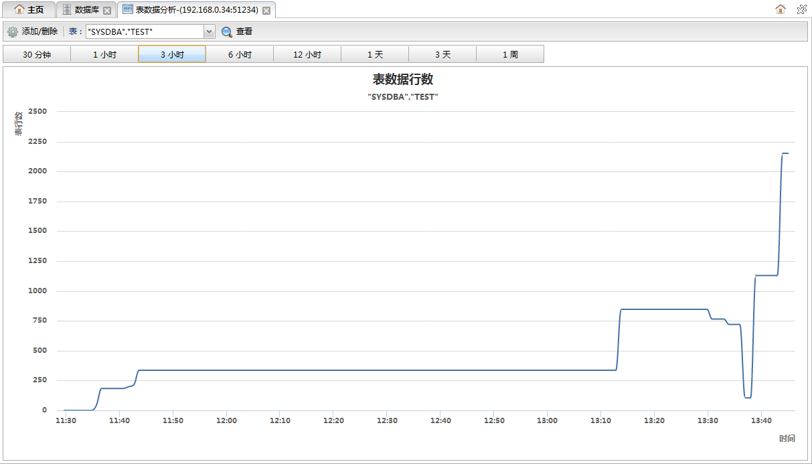
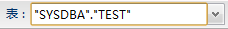

添加/删除
添加/删除 查看
查看从数据库监控面板中的数据库列表的操作下拉菜单中点击表数据分析可以打开表数据分析面板，该页面用于查看数据库的表数据监控信息。注意想要查看表数据变化情况必须先添加表监控，监控信息从添加后的一个收集频率后开始收集。如下图所示:

功能按钮列表| 按钮 | 说明 |
|---|---|
| 添加/删除 |
添加或删除表数据监控。点击打开表监控管理对话框。 |
|  | 在下拉列表中选择一个想查看的表，点击查看按钮进行查看。 |
| 查看 |
查看表数据监控。 |
时间按钮

点击按钮可以切换查看最近各个不同时间段内的表数据行数。
表数据行数图表
图表展示了表数据行数随时间的变化情况。横坐标为时间，纵坐标为表数据行数。